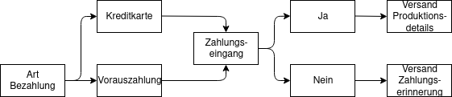

Beschreibung unseres Use Cases
Für unseren Use Case versetzen wir uns in die Rolle des Startups ClothByYou. ClothByYou bietet eine Web Plattform für Kunden, auf welcher diese Pullover bestellen können. Mittels Auswahl von vordefinierten Logos und Farben, ist es für die Kunden möglich, ihren eigenen Pullover zu gestalten und anschliessend zu bestellen. Für diese Web Plattform konzipieren wir ein ERP System, welches die Bestellabwicklung ausführt und überwacht. Speziell für den Use Case konzentrieren wir uns dabei auf die interne Bestellabwicklung einer Online Bestellung über die Web Plattform.
Betroffene/unterstützte betriebswirtschaftliche Prozesse
Digitale Web PlattformDie Schnittstelle zwischen ClothByYou und den Kunden ist die Website. Diese hat das Ziel, die Bestellungen zu einem Datensatz zu aggregieren und diese im nächsten Schritt dem Produzenten weiterzugeben. Kunden geben auf der Website an, in welcher Farbe sie die Pullover möchten und wählen ein vordefiniertes Design, welches auf den Pullover gedruckt werden soll. Weiter sind die Anzahl und der Liefertermin wählbar. Sobald die Bestellung abgeschlossen ist und die Zahlung im Zahlungssystem erfolgreich erfasst wurde, werden die Bestelldaten an die Produktion weitergeleitet.
Zahlungssystem
Kunden haben die Wahl zwischen der Bezahlung mit Kreditkarte oder Vorauszahlung. Erfolgt der Zahlungseingang, werden die Details zur Bestellung an die Produktionsstätte zur Herstellung weitergeleitet. Ging keine Zahlung ein, findet der Versand einer Zahlungserinnerung statt.
Produktionsstätte (Herstellung)Nachdem die Produktionsstätte die Bestelldetails erhalten hat, wird die Produktion der Bestellung in die laufende Produktionsplanung aufgenommen. Nach erfolgter Einplanung, wird zum definierten Produktionszeitpunkt die Freigabe erteilt und der Pullover produziert. Hat dieser die Produktion durchlaufen, wird eine Endkontrolle gemäss unseren Qualitätsansprüchen durchgeführt. Wird diese Kontrolle bestanden, erfolgt die Auslieferung an das Lager. Sollte die Endkontrolle nicht bestanden werden, muss die Ware entweder ausgebessert oder neu produziert werden. In diesem Fall beginnt der Produktionsprozess von neuem.
LagerDie Ware, welche von der Produktionsstätte angeliefert wird, durchläuft erneut eine Qualitätskontrolle. Wird diese Kontrolle bestanden, erfolgt die Einlagerung. Sollte die Eingangskontrolle nicht bestanden werden, erfolgt der Rückversand an den Lieferanten. Sobald das Lager die Details zur Auslieferung erhalten hat, wird die Ware vorbereitet und an den Druck weitergegeben.
Produktionsstätte (Druck)
Der Produktionsprozess im Druck entspricht weitgehend dem Prozess der Produktion in der Herstellung. Ausnahme dabei bildet die Anlieferung der Ware und der anschliessende Empfang der Druckdetails. Die bestellte Ware wird vom Lager mittels eines Lieferantenpartners geliefert. Die Druckdetails welche von den Kunden auf unserer Webseite eingegeben wurden, werden vom System bereitgestellt. Nach einer erneuten Endkontrolle, analog zum Produktionsprozess in der Herstellung, wird die Ware nach erfolgreicher Prüfung an den Lieferanten zur Auslieferung weitergereicht.
Lieferant (Auslieferung)Der Lieferant erhält die verpackte Ware und ruft die Lieferdetails aus unserem ERP System auf. Im internen Verteilzentrum wird die Ware für die Endauslieferung zum gewünschten Termin vorbereitet und wenn es soweit ist ausgeliefert.